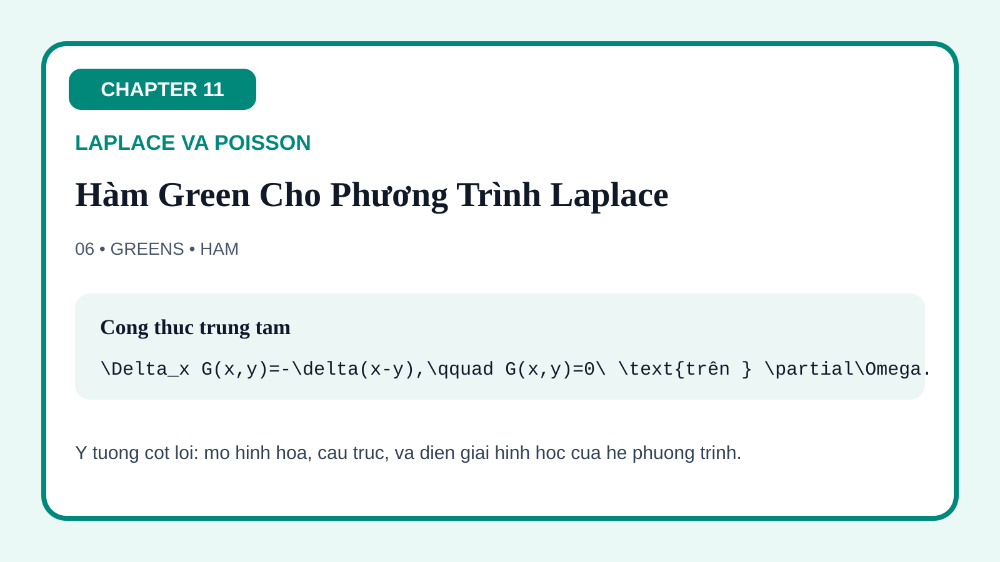
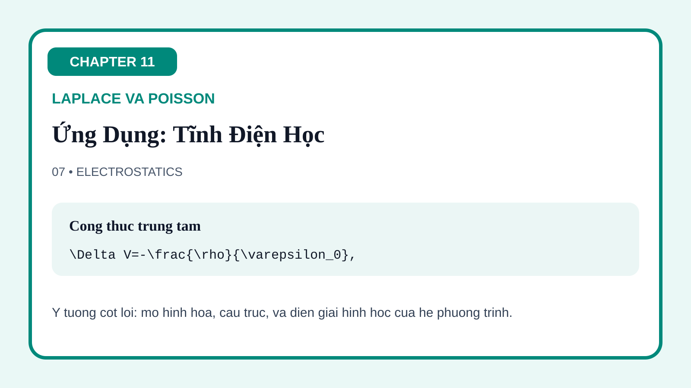

11-01 Laplace's Equation: Introduction
The opening figure frames Laplace's equation as the prototype equilibrium PDE, highlighting harmonic behavior and the absence of interior sources.
This page gathers the visual assets for Chapter 11 on Laplace and Poisson equations. The figures are arranged to emphasize the central elliptic viewpoint: equilibrium without time evolution, the controlling role of boundary data, geometry-adapted harmonic expansions, sourced balance laws, qualitative principles for harmonic functions, Green-function representation, and the major application languages of electrostatics and ideal fluid flow.
The opening figure frames Laplace's equation as the prototype equilibrium PDE, highlighting harmonic behavior and the absence of interior sources.
This figure shows how rectangular geometry and boundary data produce harmonic expansions with trigonometric behavior in one direction and hyperbolic behavior in the other.
The circular-domain figure makes angular modes and radial behavior visible, clarifying why polar coordinates are the natural language for disks and annuli.
This figure adds source structure to the elliptic picture, making the shift from pure equilibrium to forced equilibrium visually and conceptually clear.
The qualitative figure encodes one of the chapter's deepest ideas: harmonic values are controlled by surrounding data, so strict interior extrema cannot arise without triviality.
The Green-function figure shows how point-source responses and boundary corrections turn elliptic PDEs into integral representation formulas with strong geometric meaning.

This figure translates harmonic and Poisson potentials into electrostatic language, connecting charge, potential, and field lines through elliptic structure.

The final figure reinterprets harmonic functions as velocity potentials and stream structures, closing the chapter with a second major application family.